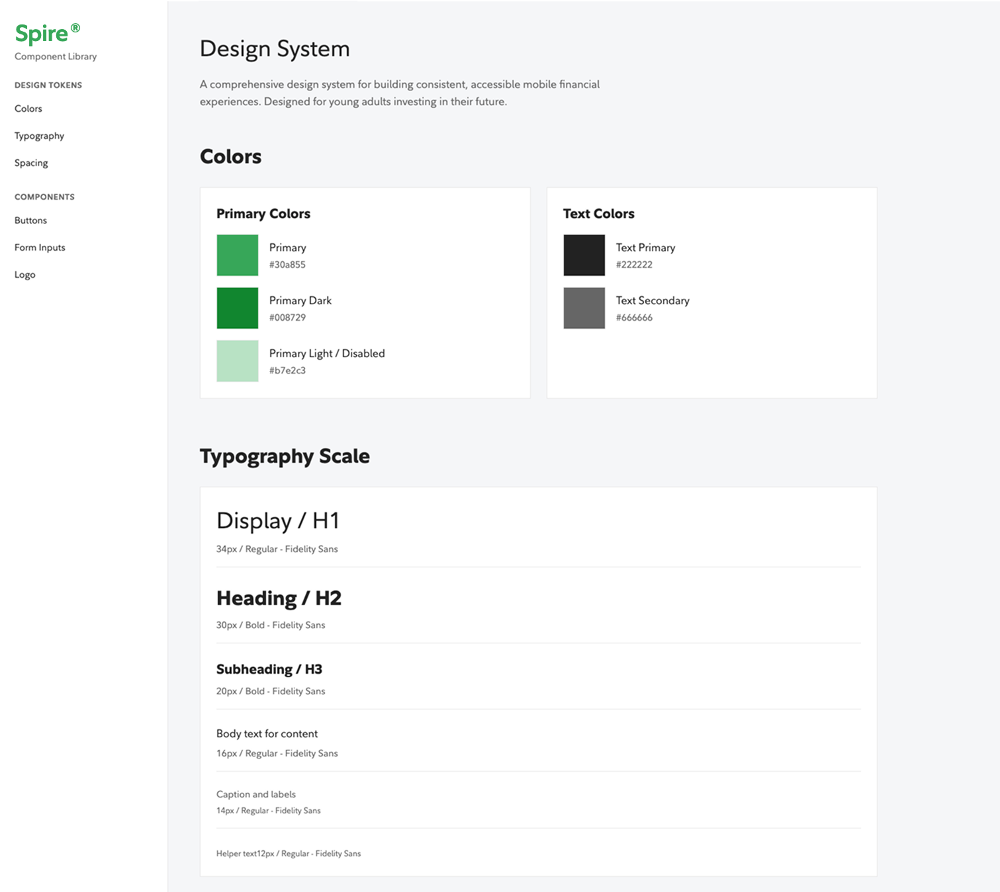
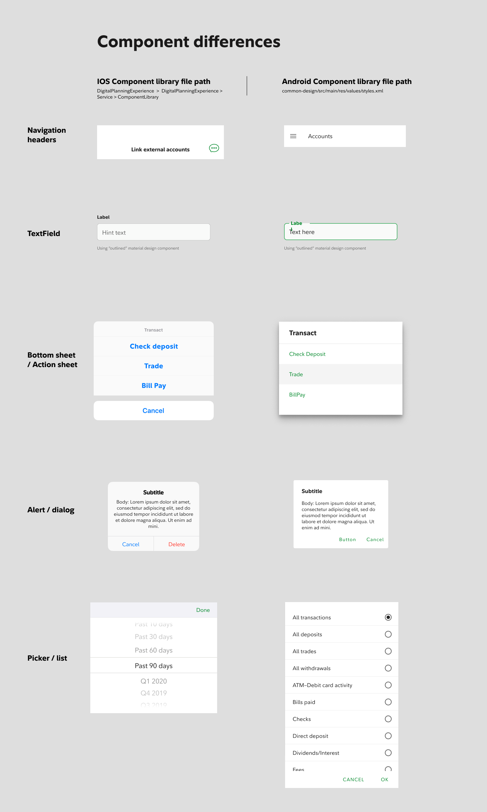
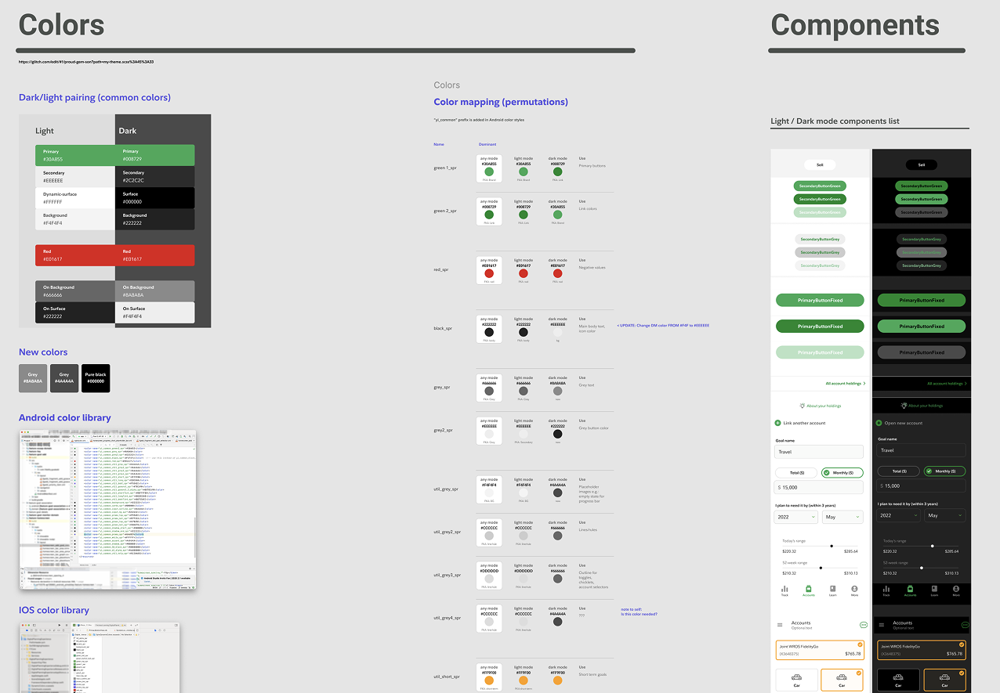
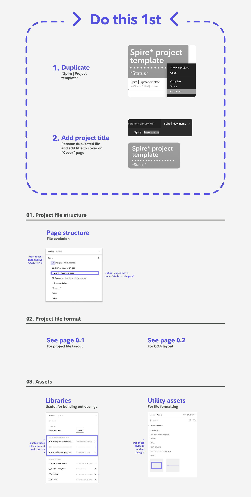
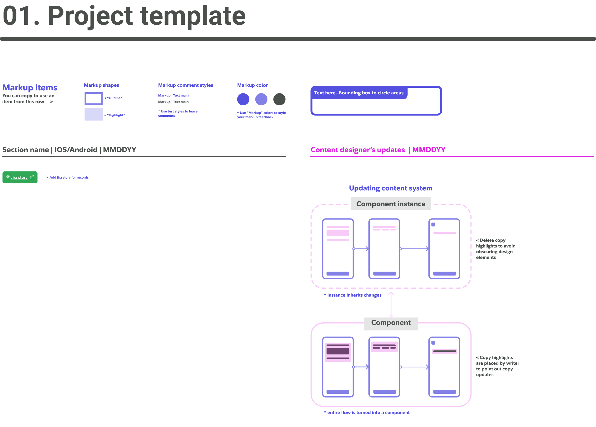
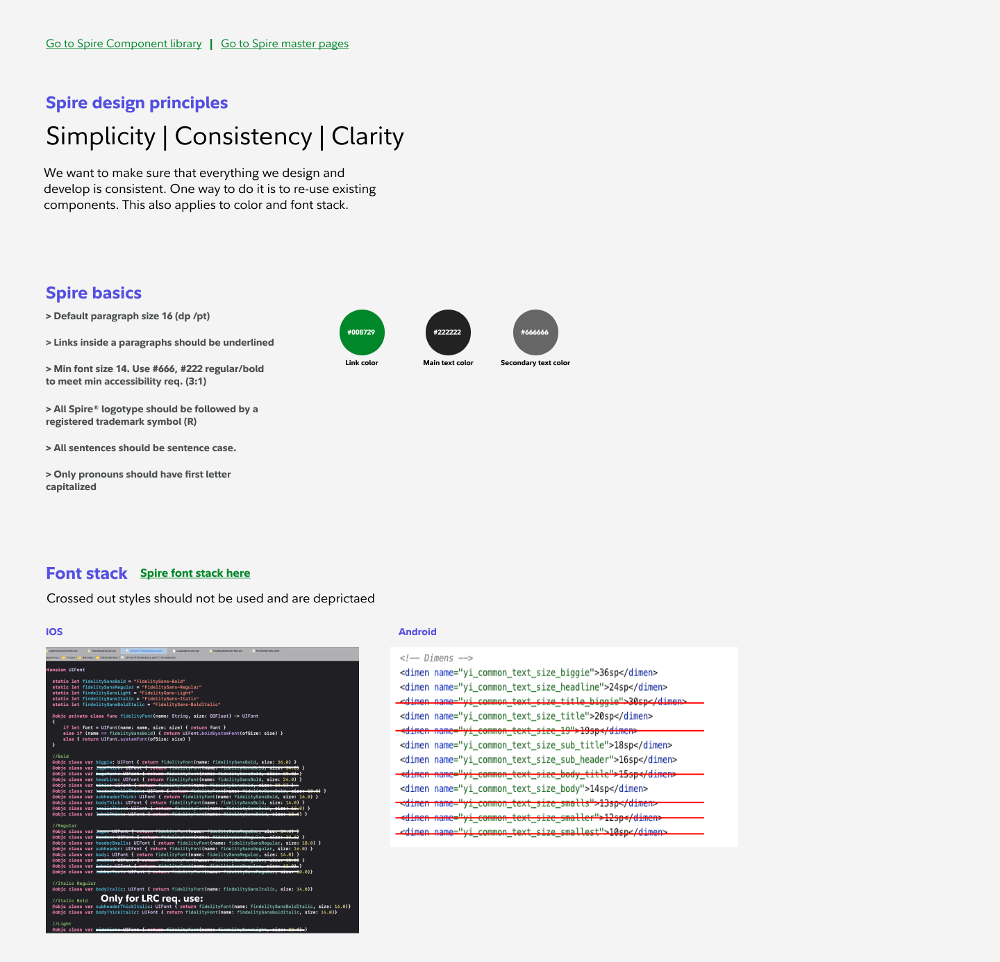
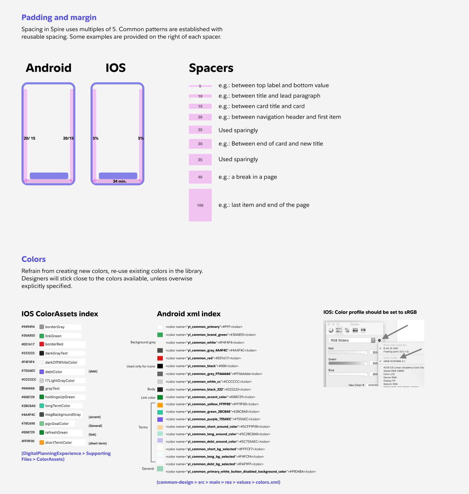
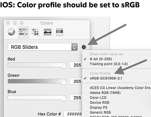

Component library, dark mode token system, Figma project template, and build access: the infrastructure work at Spire that no one assigned and that outlasted the product itself.
Spire was a small team shipping a complex product across iOS and Android simultaneously. Most of what made that possible wasn't in a sprint. It was infrastructure: the component library that gave every designer a shared starting point, the dark mode token system built from zero, the Figma template that finally told developers what was finished and what wasn't. None of it was assigned. All of it was necessary.
Component library work wasn't new to me when I joined Spire. At Fidelity Institutional I had worked on the first responsive web refactoring of their advisor platform, built on reusable components and page-level patterns mapped directly to design files. Spire's job description didn't ask for a component library. The growing complexity of the product did. I started it without being asked.
The structure was bottom-up. Color styles, text styles, and effect styles formed the base layer in Figma. Everything above referenced those styles directly: type scales built on text styles, components built on color and effect styles, page patterns built on components. A change at the base cascaded through everything referencing it.
Components were built as component sets with variant properties covering every state: default, pressed, disabled, focused, error. Auto layout was applied throughout so components responded to content predictably. A button with a longer label expanded correctly. A list item adjusted to its content. What a designer composed in the library behaved consistently with what an engineer built from it.
The library served both iOS and Android. The experience was platform-agnostic: the same flows, the same feature parity, the same content across both platforms. The components were platform-native: each platform got its own implementation following its own conventions. Material Design on Android. HIG on iOS. Tab bar on iOS, hamburger navigation on Android. No back chevron on Android because the OS handles navigation with a hardware button, so modals used X instead. Inputs, alerts, headers, and bottom sheets all followed their respective platform patterns. Every divergence was documented side by side so developers had an unambiguous reference.
The governing principle was to never create a component outside what Material Design and HIG already provided. Every platform component had its interaction model solved, its accessibility behavior defined, and its maintenance handled by the platform. A custom component meant owning its updates, its accessibility, and its code maintenance indefinitely on both platforms. The bar was high. It was almost never cleared. When it was, it was a simple UI element, not a new interaction pattern.

Component library. Color system, component sets, and light/dark inventory.

Platform-native equivalents. iOS vs Android documented side by side: navigation, inputs, bottom sheets.
Two companion files supported the library. The master Spire pages file contained every screen in production, built on library components with correct spacing and current content. It was the design-side source of truth for the latest state of the product. When a squad shipped a new screen, I retrieved it from their working file, cleaned it to master standards, and brought it in.
That file fed into the master Spire flow file: a complete sitemap showing how every screen interconnected. Both files were sole-maintained. Together they gave the team a current picture of the product at any point.
I built and maintained the library alone for the full life of the product: publishing updates, managing changes, writing documentation, setting QA standards, and onboarding designers to usage rules. 135 components. 24 styles. Six developer squads.
Spire had no dark mode. That meant no token structure, no light/dark switching logic, and a color system where every value was a hardcoded single hex across both iOS and Android. Before a single dark mode color could be defined, the entire existing system had to be understood and restructured.
I audited the full color system on both platforms, created a named token structure, and worked with developers to establish how each token resolved in light and dark contexts. The naming convention used a Spire namespace throughout: green_1_spr, red_spr, with a yl_common prefix on Android. Before this work, the names in design files and the names in code were not the same. After it, color tokens were the one layer genuinely aligned between design and developer code across both platforms. Every pairing was verified against WCAG contrast requirements.
The deliverable wasn't a palette. It was a full permutation set: a side-by-side component inventory showing developers exactly how each component renders in each mode, with legacy naming included to ease migration from the old system. Zero ambiguity at implementation time.

Color mapping permutations. Each token showing resolved values across any mode, light, and dark. Right panel: light/dark component inventory side by side with legacy naming for migration.
A director and developer at Fidelity noted in a LinkedIn recommendation that the dark mode system designed for Spire had been applied to all Spire apps. The contrast accessibility work produced during this project was adopted by the Fidelity flagship app.
The trigger was a direct request from developers. When opening a designer's file, they couldn't tell what was finalized, in progress, or abandoned. Every file was structured differently. Status was invisible unless you found the right person and asked.
I built a standardized template every designer on the team could duplicate and work from. The page structure made file state immediately readable without asking. Visual status markers were tied to Jira stories. A commenting convention added clarity at each stage.
File setup and naming convention. The first page every designer opened: how to duplicate the template, what to name the file, and how to enable the correct libraries before any work started.
A defined convention for how work evolved and archived across the file. In-flight work had a clear home. Completed work had a clear archive. Nothing was ambiguous about what state any page was in.
Which libraries to enable, which utility assets were available for markup, and where everything lived. Designers spent no time hunting for components or asking which library was current.
Design principles, spacing system, font stack, and color references for iOS and Android. Component differences between the two platforms documented side by side. For new designers, this page also served as orientation: what's in use, what's deprecated, and why the system works the way it does.

Do This 1st. File setup and naming convention before any design work begins.

Page structure. File evolution and archive convention, tied to Jira story status.

Read Me. Design principles, font stack, and color references for both platforms.

Read Me: spacing. Spacing system and color token index for iOS and Android.
I ran feedback sessions with the team while building the template. By the time it was ready, it already reflected how people worked. Adoption was full. No convincing required.
I had full access to Xcode and Android Studio. That meant seeing the latest implementation in the running build directly, not from a screenshot or a verbal description of a problem.
When the dark mode token system was pushed, I validated the colors in the build and re-validated after every subsequent push. When a shadow needed specific behavior on iOS, I provided the implementation in code rather than a static annotation. When SVG rendering produced unexpected output, I uploaded files into the environment to diagnose the issue directly.
Images and SVGs were rendering with shifted colors on device, no obvious cause. The color profile in Xcode hadn't been set to sRGB. iOS renders in the sRGB color space by default. When the profile is set to something wider, Display P3 or Adobe RGB, colors that look correct in the design file shift on the actual screen. That's not visible in a Figma file or a static screenshot. It's only visible inside the build.

Xcode color profile set to sRGB. The fix for SVG and image color rendering issues on iOS device. Not diagnosable without running the build.
Before iOS supported SVGs, every icon and asset required export at three sizes per feature, per release. Consistent overhead every cycle for both designers and developers. When iOS added SVG support, I made the case across squads, scoped the migration, and built alignment. The three-size export process was eliminated.
The gap between a spec and what ships is where quality is lost. Closing it sometimes means working inside the build.
Fidelity had run web A/B tests through Adobe Target since 2010. Native apps were a gap. No hook existed, no team had solved it, and no one had tried.
I identified the Digital Marketing Technology team as the missing piece, made the case to the squad lead, and brought them in to build a custom bridge between native app behavior and Adobe Target. The first test launched in January 2022 and produced a 61% lift in account open conversion at 99.9% statistical confidence.
The infrastructure didn't stay inside Spire. Fidelity now has a dedicated pool of developers and standard guidelines for running native app experiments across all its mobile products. What started as a solution for a single Spire test is now how Fidelity validates product decisions in native apps.
Case studyThe hypothesis, experiment design, +61% lift result, and the infrastructure it left behind.
Spire was sunset in 2022. The component library, the dark mode system, the Figma template, the experimentation infrastructure: none of it required continued involvement to keep working. That's the version of design impact worth building toward.